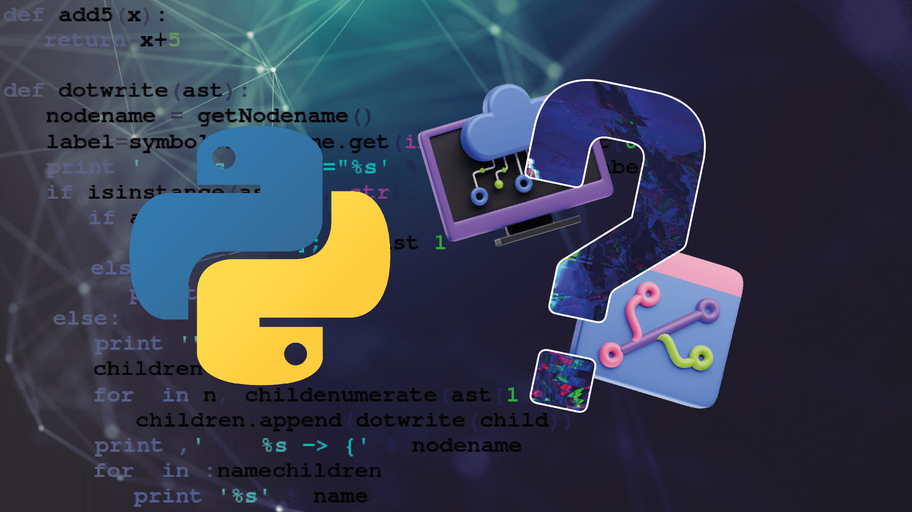
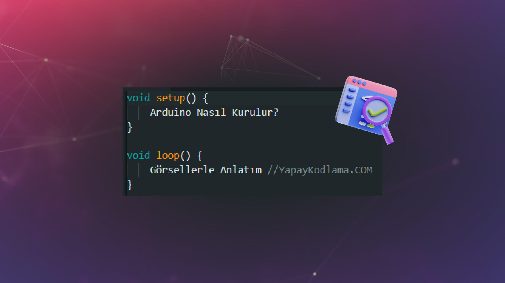
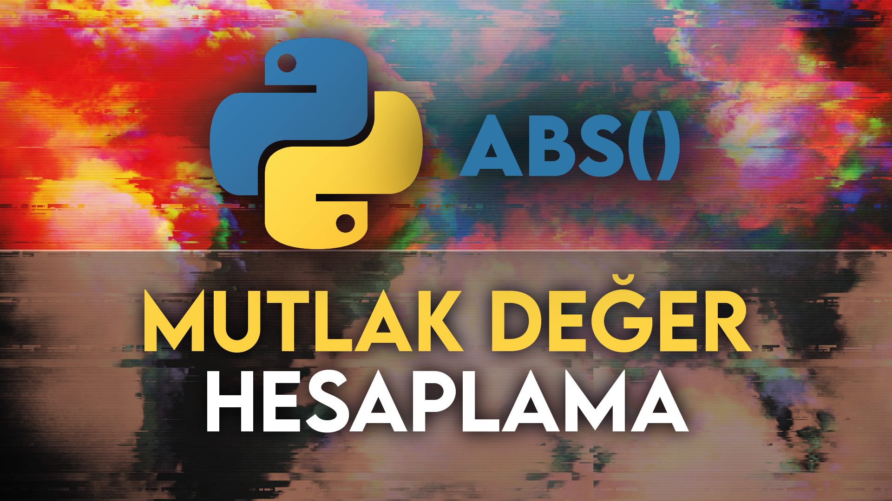

Arduino Nasıl Kurulur? Görsellerle Adım Adım Anlatım
Python'da abs() Fonksiyonu ile Mutlak Değer Hesaplama
Son Yazılar

🕓 01.11.2026
Python Nedir ve Neden Bu Kadar Popüler?

🕓 08.11.2026
Arduino Nasıl Kurulur? İlk Devre ve Kodlama

🕓 08.11.2026
Python abs() Fonksiyonu ile Mutlak Değer Hesaplama
🕓 08.11.2026
Python ile Yazıyı Ters Çevirme Yöntemleri

🕓 08.11.2026
Yapay Zekâ Projelerinde Python Kütüphaneleri
Öne Çıkan Makale Kartları
Programlama
Makaleyi Oku →
Python Nedir? Neden Hâlâ En Çok Öğrenilen Programlama Dili?
Sadece başlayanlar için kolay bir dil mi, yoksa yapay zekâdan veri bilimine kadar uzanan güçlü bir araç mı?
Donanım
Makaleyi Oku →
Arduino Nasıl Kurulur? Görsellerle Anlatım
Arduino IDE kurulumu, UNO kartının pin yapısı ve C/C++ tabanlı ilk LED yakıp söndürme uygulaması.
Python
İncele →
Python'da Mutlak Değer Hesaplama: abs() Fonksiyonu
Tam sayılar, ondalıklı sayılar ve karmaşık sayılarda abs() fonksiyonunun kullanımı ve algoritma örnekleri.
Algoritma
İncele →
Python ile Yazıyı Ters Çevirme Yöntemleri
Dilimleme (slicing [::-1]), reversed() fonksiyonu ve döngüler kullanarak metinleri ters çevirme teknikleri.